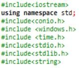

ACTIVIDAD 1
C++
Este lenguaje es un lenguaje sencillo de usar, pero al presentarse algún problema hay que tener buena lógica y buena atención para hallarlo y resolverlo.
Como es lógico este no es el mismo lenguaje que el humano, la computadora entiende en binario y usa este mismo para mostrarnos lo que venmos en pantalla.
Necesitamos unas librerias para poder empezar a programar en c++.
Las librerías son estas:

necesitamos también unas funciones para poder programar y son: int, char, main, boolean, string, while y float.
cada una de estas funciones nos sirve para que la página esté en buen funcionamiento.
En mi opinión en estas 2 clases lo que vimos fue un repaso del año pasado con lo básico, en general vimos muchas cosas para recordar y volver a la marcha de nuevo.